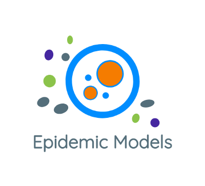

IMT Epidemic Models 
Modelos Analíticos
Modelo SIR
Modelos Estocásticos
Modelo Reed Frost
Baseados em Dados
SIR Dados Artificiais
SIR
🇬🇧
Reino Unido 1944-1964
SIR
🇬🇧
Reino Unido Modelos Espaciais
SIR
🇧🇷
Parâmetros variantes
COVID
SIR
🇧🇷
Brasil - Dados Reais
SIR
🇨🇳
China - Dados Reais
SIR
🇮🇹
Itália - Dados Reais
SIR
🇩🇪
Alemanha - Dados Reais
Code APIs
epidemicModels
models package
Autores
Vanderlei Cunha Parro
Marcelo Mendes Lafetá Lima
Felipe Brandão Ippolito
Felipe Antonio Silva de Andrade
IMT Epidemic Models
»
epidemicModels
View page source
epidemicModels
¶
models package
Stochastic Search - Learning models
Cost Functions
Differential Models
Module contents